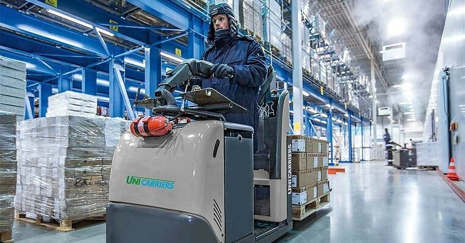
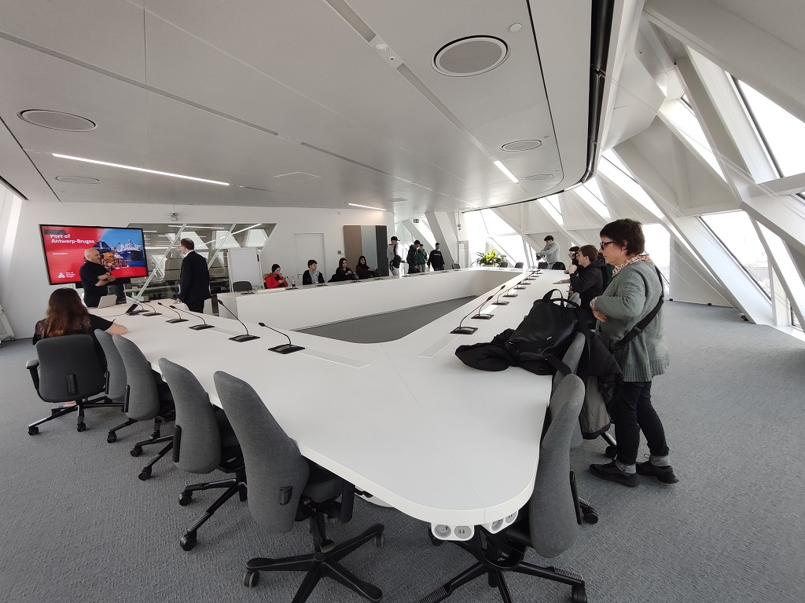

Nuestros Servicios
Transporte Refrigerado

Ofrecemos servicios de transporte refrigerado de alta calidad, garantizando la cadena de frío en todo momento. Nuestros vehículos están equipados con la última tecnología en refrigeración y monitoreo de temperatura.
- Flota moderna de vehículos refrigerados
- Control de temperatura en tiempo real
- Entrega puntual y segura
Almacenamiento Frigorífico
Contamos con instalaciones de almacenamiento frigorífico de última generación para conservar sus productos en condiciones óptimas. Ofrecemos diferentes rangos de temperatura para adaptarnos a sus necesidades específicas.
- Cámaras frigoríficas de gran capacidad
- Control de humedad y temperatura personalizado
- Sistemas de seguridad avanzados
Logística Integral
Proporcionamos soluciones logísticas integrales para optimizar su cadena de suministro. Desde la recepción de mercancías hasta la distribución final, nos encargamos de todo el proceso.
- Gestión de inventario en tiempo real
- Preparación de pedidos y embalaje
- Distribución nacional e internacional